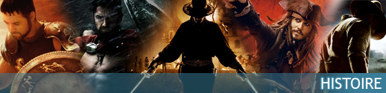

<div style="background:white">
  
  <p >Bienvenue et montez vite à bord pour une grande traversée avec One Piece. Devenez un grand corsaire avec l'immense sabre de Dracule Mihawk l'épée Yoru. Vous voulez pratiquer la techniques à trois sabres de Roronoa Zoro : Santōryū avec les sabres d'exceptions Wadô Ichimonji, l'épée Sandai Kitetsu, Yubashiri et même le sabre Shûsui dit la maudite. Envie d'être une star de la Soul avec la canne épée de Brook. Naviguer vers le nouveau monde, sur la route de tous les périls avec le katana de Trafalgar Law. Retrouvez nos dernières nouveautés le Meito Emna, ou Ame no Habakiri, ainsi que le sabre de Luffy Nidai Kitetsu.

    Il y à probablement celui que vous recherchez !
  </p>
</div>
